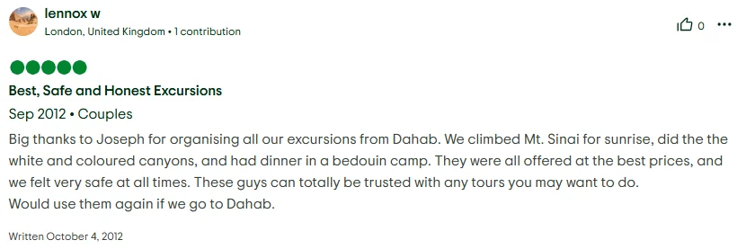

في جنوب سيناء يوجد «كانيونان ملونان»، ومعظم الزوار لا يعرفون ذلك. رحلتنا تذهب إلى الكبير: الكانيون الملون الأصلي قرب نويبع، بجدرانه الرملية العميقة والضيقة بألوان الأحمر والذهبي والبنفسجي والأبيض. يوم طويل لكنه هادئ، بإرشاد جوزيف وآنيت، وعندما تخرج من الكانيون تجد الغداء جاهزًا من إعداد الشيف ماري.

كانيونان ملونان: أيّهما ستزور؟
الكانيون الملون الكبير يقع قرب نويبع، وهو الأصلي: عميق وضيق، وطبقاته المعدنية بكل الألوان. أما كانيون سلامة فيُباع غالبًا باسم «الكانيون الملون الصغير». معظم الرحلات اليومية من دهب تذهب إليه مع الكانيون الأبيض وعين حضرة وصخرة المشروم، لذلك يكون مزدحمًا في العادة. الكانيون الملون الكبير يزوره عدد أقل بكثير من الناس، وفي بعض الأيام لا تجد فيه أحدًا غيرنا.

برنامج اليوم
- 08:00: ننطلق من The Hub في دهب
- حوالي ساعتين ونصف: نقود عبر الصحراء إلى الكانيون (المدخل من الطريق مغلق، لذلك نسلك الطريق الصحراوي)
- ساعتان: نترك السيارة ونمشي داخل الكانيون، ويشرح جوزيف كيف تكوّن الكانيون، ومن أين جاءت ألوانه، وقصة الأرض من حوله
- الغداء: عندما نخرج من الكانيون نجد الغداء جاهزًا من إعداد الشيف ماري
- حوالي ساعتين ونصف: نعود بالسيارة إلى The Hub، ونصل نحو الساعة 16:00
في بعض الأيام يكون الكانيون كله لنا. لا زحام، فقط الألوان والسكون.
يشمل
- الاستقبال والتوصيل من فندقك في دهب أو من The Hub
- جميع التصاريح
- غداء من إعداد الشيف ماري
- مياه وشاي
- مرشداك جوزيف وآنيت
لا يشمل: البقشيش والمصاريف الشخصية.
أحضر معك
- حذاء مريح للمشي
- جواز السفر (توجد نقاط تفتيش على الطرق الداخلية)
- قبعة وواقي شمس
السعر
300 يورو للسيارة، من 1 إلى 4 أشخاص
احجز وادفع أونلاين
دفع آمن بالبطاقة عبر PayTabs. ادفع المبلغ كاملًا، أو عربونًا 50% الآن والباقي في دهب. يتم الدفع بالجنيه المصري (1 يورو = 60 جنيه).
بعد الدفع، أرسل لنا التاريخ والأسماء على واتساب لنؤكد رحلتك. أرسل على واتساب
ماذا يقول ضيوفنا


الإلغاء
الإلغاء مجاني حتى 3 أيام قبل الرحلة. بعد ذلك يُحتسب سعر الرحلة كاملًا.